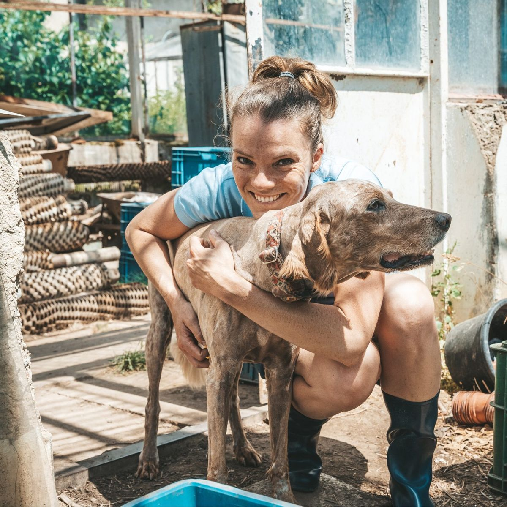
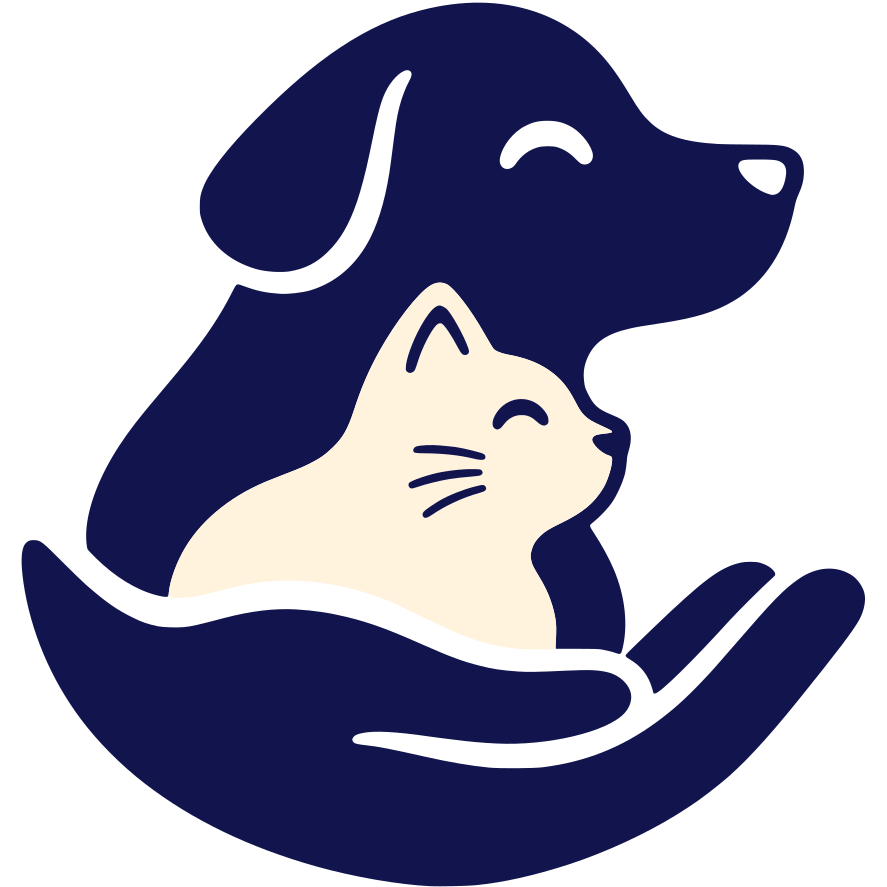

Rescatamos
Atendemos reportes de animales abandonados, heridos o en riesgo y los llevamos a un lugar seguro.
Rescatamos perros y gatos en situación de abandono, los curamos y les buscamos una familia para siempre. Tú también puedes ser parte de la red.

 Adopta. No compres.
Adopta. No compres.

RehabilitamosAmamosCada animal que llega a la fundación recorre el mismo camino: lo sacamos del peligro, recupera su salud y espera, seguro, a la familia que lo va a querer.
Atendemos reportes de animales abandonados, heridos o en riesgo y los llevamos a un lugar seguro.
Atención veterinaria, vacunas, desparasitación y esterilización. También trabajamos su confianza y socialización.
Buscamos familias responsables y acompañamos cada adopción para que sea para toda la vida.
Llegó con una pata lastimada. Hoy está sana, esterilizada y lista para conocer a su familia.
Quiero conocer a LunaJuguetona y curiosa. Busca una familia con tiempo para enseñarle y salir a pasear.
Quiero conocer a Canela Foto próximamenteGato
Foto próximamenteGatoTranquilo y cariñoso. Ideal para departamento; se lleva bien con otros gatos.
Quiero conocer a Tomás
No todos pueden adoptar, pero todos pueden sumar. Una donación, unas horas de voluntariado o un hogar temporal cambian la historia de un animal.
Escríbenos con la ubicación y una foto. Haremos lo posible por ayudar o te orientaremos sobre qué hacer.